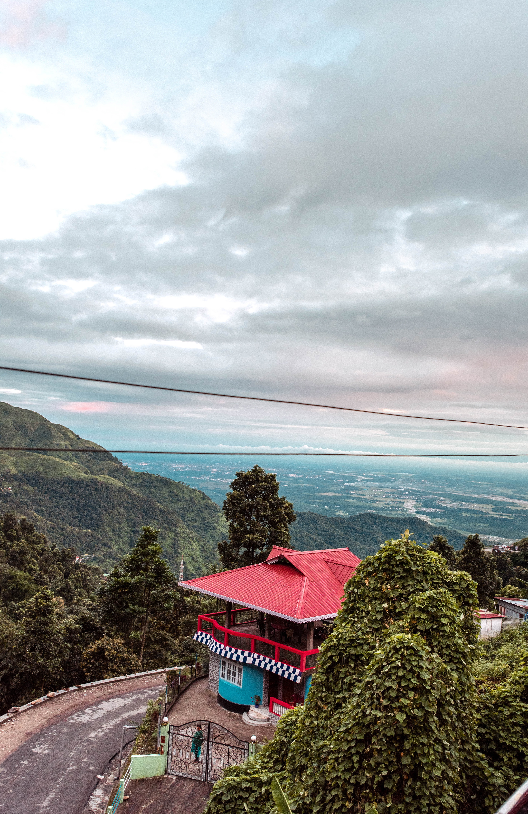
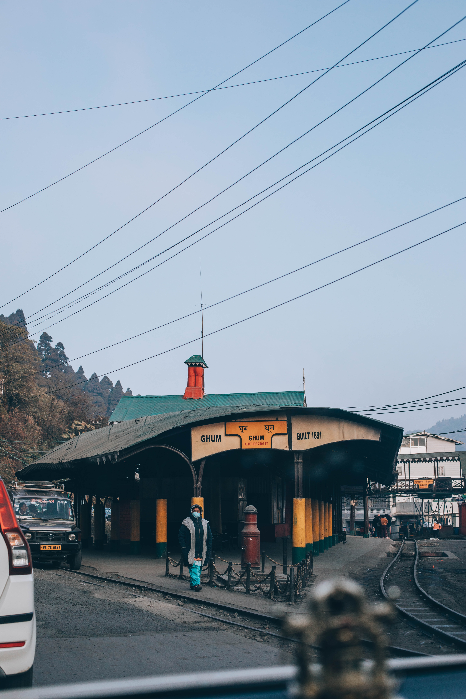

Darjeeling is a city and a municipality in the Indian state of West Bengal. It is located in the Lesser Himalayas at an elevation of 2,000 metres (6,560 ft). It is noted for its tea industry, its views of the world's third-highest mountain Kangchenjunga, and the Darjeeling Himalayan Railway, a UNESCO World Heritage Site. Darjeeling is the headquarters of the Darjeeling district which has a partially autonomous status called Gorkhaland Territorial Administration within the state of West Bengal. It is also a popular tourist destination in India.
The recorded history of the town starts from the early 19th century when the colonial administration under the British Raj set up a sanatorium and a military depot in the region. Subsequently, extensive tea plantations were established in the region and tea growers developed hybrids of black tea and created new fermentation techniques. The resultant distinctive Darjeeling tea is internationally recognised and ranks among the most popular black teas in the world. The Darjeeling Himalayan Railway connects the town with the plains and has some of the few steam locomotives still in service in India.

Darjeeling has several British-style private schools, which attract pupils from all over India and a few neighbouring countries. The varied culture of the town reflects its diverse demographic milieu comprising Lepcha, Khampa, Gorkha, Kirati, Newar, Sherpa, Bhutia, Bengali and other mainland Indian ethno-linguistic groups. Darjeeling, alongside its neighbouring town of Kalimpong, was the centre of the Gorkhaland social movement in the 1980s and summer 2017.
